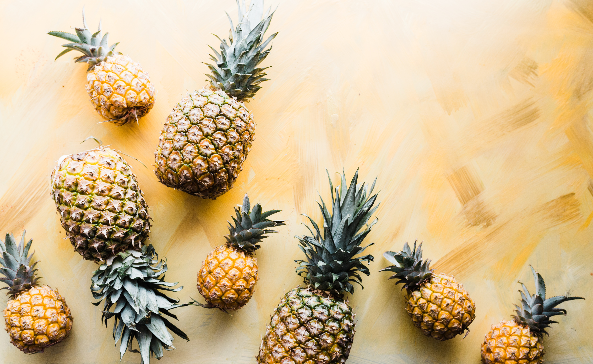

html이란 무엇인가
- html
- css
- food
food

any nourishing substance that is eaten, drunk, or otherwise taken into the body to sustain life, provide energy, promote growth, etc.
more or less solid nourishment, as distinguished from liquids.
a particular kind of solid nourishment:a breakfast food; dog food.whatever supplies nourishment to organisms:
plant food.anything serving for consumption or use:
food for thought.